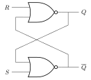
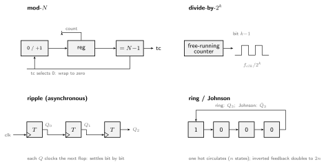
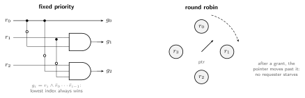

A sequential circuit combines stored state with logic that computes outputs and next state.
The following examples use edge-triggered synchronous design.
A bistable holds one bit using feedback. Cross-coupling two NOR gates gives an SR latch: sets , resets , both low holds, both high is illegal ( and both driven low, and releasing and together races).

| 0 | 0 | hold | |
| 0 | 1 | 0 | reset |
| 1 | 0 | 1 | set |
| 1 | 1 | – | illegal |
Its characteristic equation (next state as a function of inputs and present state, assuming ): . Gating and with an enable gives the clocked SR latch, active only while the enable is high.
A D latch removes the illegal state by deriving
,
behind the enable, so
.
It is level-sensitive: while EN is high it is transparent
(
follows
);
while low it holds. Transparency makes latches hard to time, so
synchronous RTL avoids inferring them.
A D flip-flop is edge-triggered: it samples only on the rising clock edge and holds for the rest of the cycle. The classic construction is master-slave: two D latches on opposite clock phases. While the clock is low the master is transparent and the slave holds; on the rising edge the master closes, freezing the value the slave then presents. No moment exists when input can flow straight through, which is what edge triggering means. The triangle on the clock pin marks edge sensitivity. It is the standard state element.
Variants derive from it, each defined by its characteristic equation:
| Type | Characteristic | Behavior |
|---|---|---|
| D | load every edge | |
| T | toggle when | |
| JK | set on , reset on , toggle on both |
Read in reverse, the excitation table gives the inputs forcing a desired transition, the classical recipe for designing FSM next-state logic with T or JK flops (a D flop’s excitation is trivially , one reason it won). D flops dominate RTL implementations; toggle and JK behavior can be built with next-state logic.
Each flip-flop imposes timing constraints around the edge (, , clock-to-), and together with the logic delay between flops they set the clock period. The full timing story, from the setup and hold equations to skew, metastability, and static timing analysis, is the subject of Synthesis, Timing and Power.
Model edge-triggered state with always_ff and the
nonblocking assignment (<=). Combinational blocks use
blocking =; sequential blocks use <=. This
convention avoids common simulation races.
always_ff @(posedge clk)
if (rst) q <= '0; // synchronous reset
else if (en) q <= d; // load only when enabledA register is flip-flops on a shared clock storing an -bit word, usually with an enable (conditional load) and a reset (force to a known value). A slash with a number marks a bus width.
Connecting each flip-flop’s output to the next input shifts the word one position per clock. Used for serial-to-parallel conversion, delays, and LFSR sequence generators.
always_ff @(posedge clk) q <= {q[2:0], in}; // shift left, in at LSBFeeding a register through an incrementer makes a binary counter. Variants add load, enable, up/down direction, and a terminal-count output. Common shapes:

An LFSR (linear feedback shift register) counts through a pseudo-random sequence: shift, with the input the XOR of taps given by a generator polynomial over . A maximal polynomial such as cycles through all nonzero states:
always_ff @(posedge clk) lfsr <= {lfsr[2:0], lfsr[3] ^ lfsr[2]};Seed this XOR-feedback LFSR with a nonzero value; zero is a lock-up state. Tap numbering depends on shift direction and implementation, so verify the recurrence’s period.
A CRC also needs message input. For a non-reflected, MSB-first CRC with polynomial , one input bit updates the remainder as:
logic feedback;
assign feedback = crc[15] ^ data_bit;
always_ff @(posedge clk)
if (rst) crc <= 16'hFFFF;
else if (en)
crc <= {crc[14:0], 1'b0} ^ (feedback ? 16'h1021 : 16'h0000);Initialization, bit order, and final XOR define the CRC variant. This
example uses initial FFFF, MSB-first data, and no final XOR
(CRC-16/IBM-3740).
A register file is a small multi-port array: often with combinational reads (nonzero propagation delay) and clocked writes. It backs a CPU’s architectural registers.
logic [31:0] rf [0:31];
assign rd1 = rf[ra1];
always_ff @(posedge clk) if (we) rf[wa] <= wd;Larger storage uses RAM. Registered reads are common in FPGA block RAM; supported ports and read-during-write behavior depend on the memory primitive.
logic [W-1:0] mem [0:DEPTH-1];
always_ff @(posedge clk) begin
if (we) mem[addr] <= din;
dout <= mem[addr]; // read-first: old data on a same-address write
endA FIFO buffers data between producer and consumer using a circular
buffer with write and read pointers. full and
empty flags come from comparing the pointers; a wrap bit
distinguishes the two equal-pointer cases. A dual-clock FIFO uses
synchronized, registered Gray pointers and CDC timing constraints; Gray
encoding alone is insufficient.
For a synchronous ready/valid channel, a transfer occurs on an edge
with both signals high. The producer asserts valid when
data is available and holds it and the payload stable until acceptance;
it must not wait for ready before asserting
valid. The consumer may deassert ready to
apply backpressure.
Buffers absorb short stalls, not a permanently slower consumer. Avoid combinational loops through connected interfaces. This protocol alone does not cross clock domains; use an asynchronous FIFO or CDC handshake from Synthesis, Timing and Power.
An arbiter grants a shared resource to one of several requesters, one grant per cycle. A fixed-priority arbiter always favors the lowest index (a priority encoder over the request vector); a round-robin arbiter rotates priority after each grant for fairness.

Inserting registers to split a long combinational path into stages can increase clock frequency while sustaining one result per cycle, at the cost of added latency; the slowest stage sets the period. The worked example, the forwarding pitfall, and the loop-carried-dependency limit are in Synthesis, Timing and Power.
An FSM is sequential logic with named states. It has combinational next-state logic, a state register, and combinational output logic.
The design procedure:
case and let synthesis
minimize).The example below is a Mealy “101” sequence detector; the
1/det arc asserts the output the cycle the pattern
completes.
Separate state storage, next-state logic, and output logic:
typedef enum logic [1:0] { S0, S1, S2 } state_t;
state_t state, next;
always_ff @(posedge clk)
if (rst) state <= S0;
else state <= next;
always_comb begin
next = state;
unique case (state)
S0: if (in) next = S1;
S1: if (in) next = S1; else next = S2;
S2: if (in) next = S1; else next = S0;
default: next = S0;
endcase
end
assign det = (state == S2) && in; // Mealy outputA Moore detector adds a “just saw 101” state and asserts after the edge that captures the final bit. A Mealy detector can assert before that edge. Moore outputs are not inherently registered.
Encoding: binary uses
flops; one-hot uses
with simpler decoding. Gray codes change one bit only along selected
adjacent transitions, not arbitrary FSM edges. A default
defines RTL recovery from unused codes; synthesis may remove
unreachable-state logic, so use and verify safe-FSM options when
hardware recovery is required.
Harris & Harris, Digital Design and Computer Architecture, RISC-V Edition — ch. 3–5.
Dally & Harting, Digital Design: A Systems Approach — sequential building blocks and system design.
License: MIT.